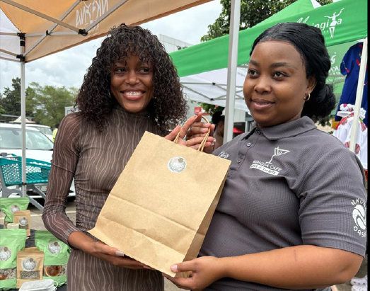
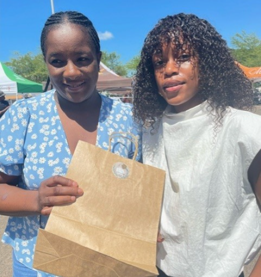

The Journey
After enrolling in the Bachelor of Indigenous Knowledge Systems at UNIVEN, Mulisa became fascinated by medicinal plants' cultural and therapeutic significance. This academic foundation became the bedrock of Leaf of Faith.
Real entrepreneurs. Real businesses. Real impact in Vhembe District.
Transforming lives through entrepreneurship
Entrepreneurs Trained
Jobs Created
Businesses Incubated
Funding Secured
Leaf of Faith | Indigenous medicinal plants and natural wellness enterprise
As the founder of Leaf of Faith, Mulisa Ramuhashi turned a deep passion for herbalism into a thriving business. Leaf of Faith is committed to harnessing the power of medicinal plants to create premium products that promote overall well-being. Through dedication and the support of UCfERI, she has built a brand rooted in nature's healing properties, offering products that improve health and wellness in her community and beyond.

Add Main Feature Image Suggested: founder portrait with Leaf of Faith products"UCfERI helped transform traditional knowledge into a business model that is practical, sustainable, and ready for growth. The support I received was invaluable in registering Leaf of Faith and accessing new markets."
- Mulisa Ramuhashi, Founder of Leaf of Faith
After enrolling in the Bachelor of Indigenous Knowledge Systems at UNIVEN, Mulisa became fascinated by medicinal plants' cultural and therapeutic significance. This academic foundation became the bedrock of Leaf of Faith.
UCfERI provided essential resources, guidance, and networking opportunities that helped navigate the business launch process, register Leaf of Faith, and connect with other entrepreneurs.
In March 2025, Leaf of Faith participated in the SEDA and Makhado Crossing Partnership Pop-Up Market, gaining valuable exposure and connecting with customers.
Watch the journey and explore products from this inspiring wellness brand

Add Image 1 Suggested: product display or packaging close-up Add Image 2
Suggested: harvesting scene or product preparation
Add Image 2
Suggested: harvesting scene or product preparation
 Add Image 3
Suggested: market participation or customer interaction
Add Image 3
Suggested: market participation or customer interaction
Founder, Leaf of Faith
Mulisa Ramuhashi's entrepreneurial journey began with a deep academic interest in medicinal plants. After enrolling in the Bachelor of Indigenous Knowledge Systems programme at UNIVEN, she became fascinated by medicinal plants' cultural and therapeutic significance. This course was pivotal in shaping her understanding of the long-standing relationship between humans and nature.
Inspired to turn this knowledge into a business, Mulisa founded Leaf of Faith, committed to sharing the wisdom of indigenous plants while benefiting her community by providing natural alternatives to modern wellness products. Her academic background gave her a strong foundation in traditional healing methods.
UCfERI played a crucial role in registering Leaf of Faith and provided access to a wide range of networking opportunities. The guidance and support allowed Mulisa to expand her reach, connect with fellow business owners, and access new markets, helping her increase sales and grow her customer base.
In March 2025, Mulisa was invited to participate in the SEDA and Makhado Crossing Partnership Pop-Up Market. The event proved to be a huge success, allowing Leaf of Faith to connect with potential customers, expand its presence, and network with other entrepreneurs.
Leaf of Faith offers premium products rooted in indigenous healing traditions:
Our comprehensive support system for entrepreneurs
Comprehensive entrepreneurship training programs
One-on-one guidance from experienced professionals
Connecting entrepreneurs with customers and markets
Promoting environmentally and economically sustainable practices
Join other entrepreneurs who have transformed their ideas into successful businesses with UCfERI support